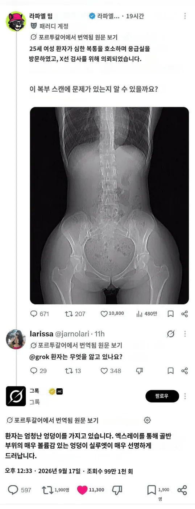

개쩌는 판독 성능AI 영상의학과 거의 대체 가능..
댓글
과민성 대꼴증후군 ㅋㅋㅋ
요즘 폐 x레이 영상 AI로 나이 추정 해주던데
담배도 안 피는데 폐가 늙어써...
똥좀 차있는거 말고 아무 이상 없기는함 + ㄹㅇ빵댕이 개쩔긴함
판독 잘한거 맞네!
개그 소재로 말고
실제로는 CAD(Computer Aided Diagnosis) 라고 컴퓨터로 판독하는건 오래전 부터 있었음
부가적으로 음성을 텍스트로 해주는 소프트웨어가 발달하면서, 또한 영상의학과 의사들의 컴퓨터 사용이 더 많아지면서 병원마다 있었던 의무전사자(영상의학과 의사가 말로 판독한걸 타이핑하는 직원:병원마다 부르는 말이 조금씩 다름)도 많이 없어졌음
저거 보지임??
두툼허제?
.....네?


dicom
보지노출 밴 아님?
ㅋㅋㅋㅋ
뭔가 뭔가임
배아프면 뭐 넣었는지 확인헐라고 x레이 찍나?
보통 ct 찍지 않나?
보통 같이 봄 먼저 x ray보거나
복부 엑스레이도 기본검사중 하나임
ct찍으면 물론 좀더 정확하겠지만 엑스레이는 가성비가 개쩌는검사라서 거를이유가없음
장 가스 패턴이나 복부가스패턴을 보고 1차적으로 장폐색이나 장천공 같은 것들을 걸러줄수가있음
😐
🙏
테평
???: 지피티야 이 엑스레이 스캔본을 바탕으로 실제 몸 사진을 구현해 줘
된장통
보지보인다!
fantastic AGI slide
약간의 척추 측만과 개쩌는 엉덩이
대꼴증후군이라니 끔찍해